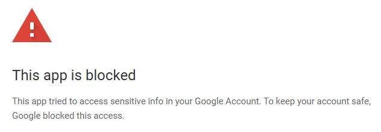
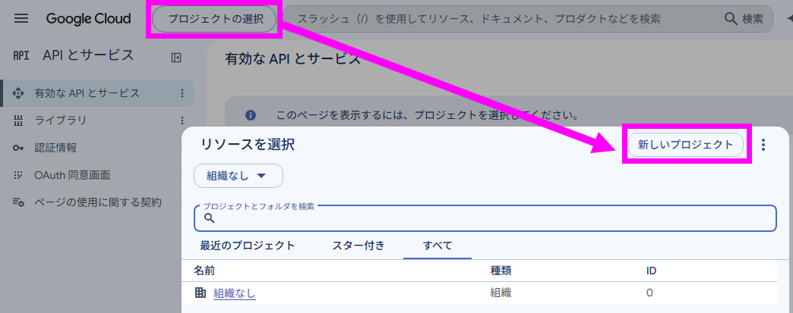
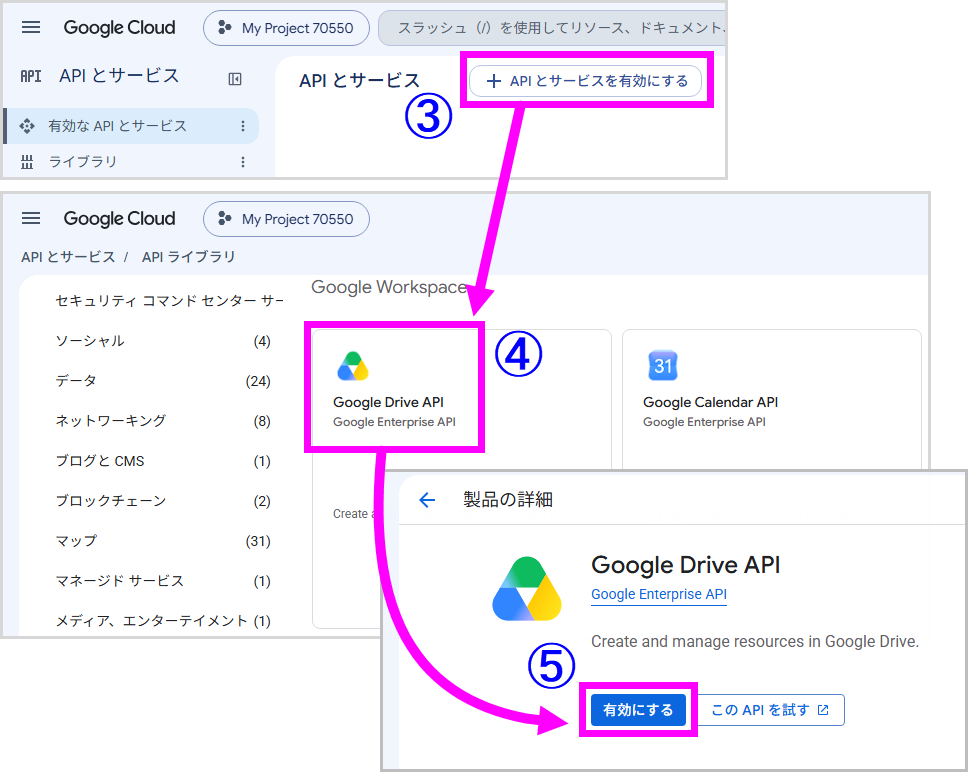
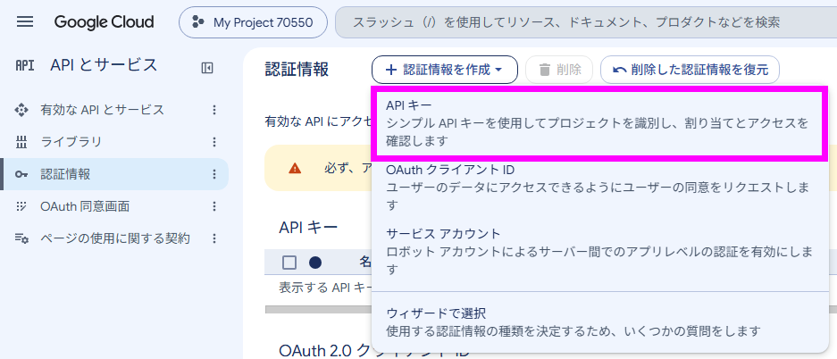
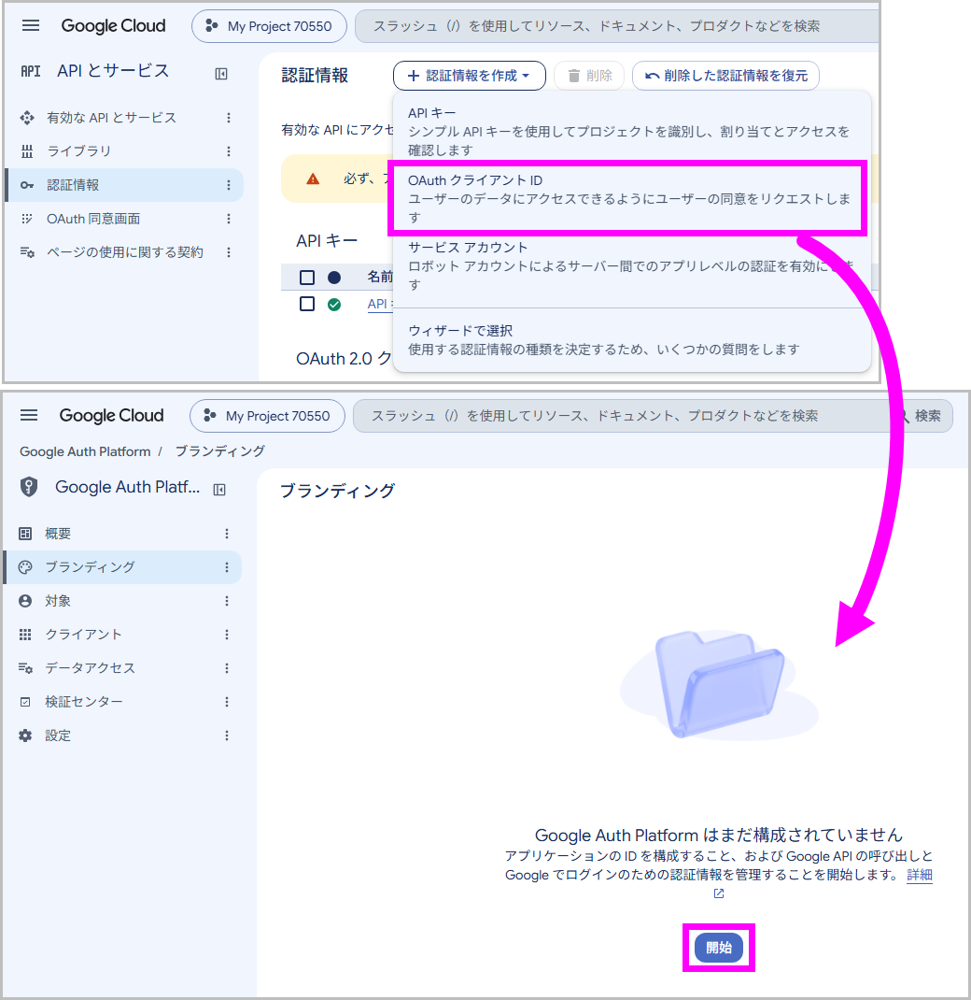
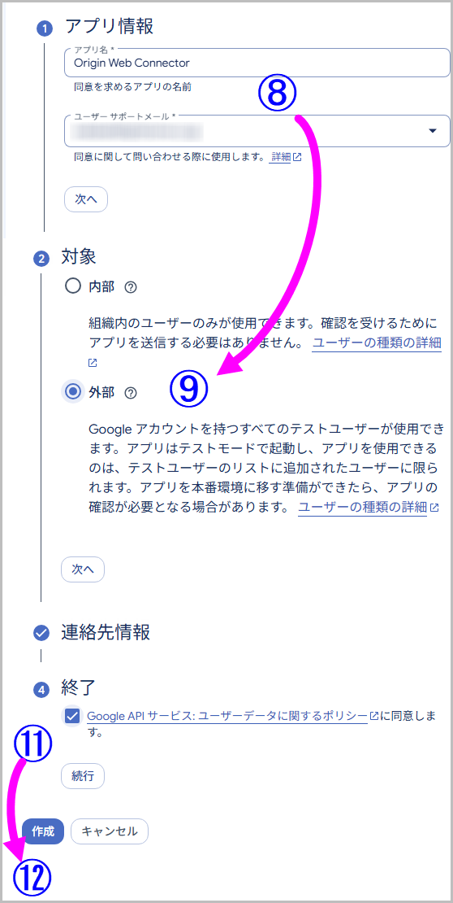
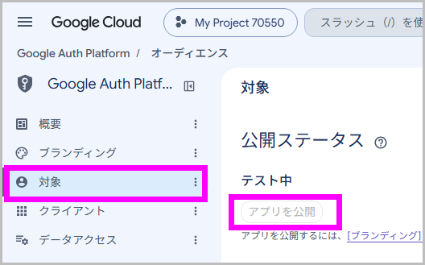
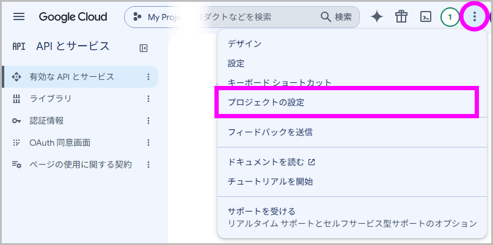
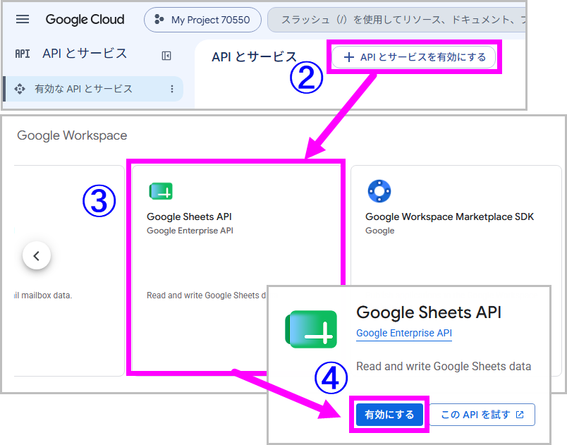

FAQ-1223 OriginのGoogle Drive Cloudツールを利用するためにGoogle client_idを作成するには？
Create-Google-API-Key
最終更新日：2026/9/24
 | 重要：Google Cloudのドメイン要件について
Googleでは、Google Cloudアプリケーションの設定要件が変更されています。OAuth同意画面を作成または設定する際に、ドメイン情報の入力が必要になる場合があります。
以下の手順を実行する前に、次の点を確認してください。
- Google Cloudの設定に使用できるドメインを所有している
- そのドメインおよびOAuth設定を変更するための適切な権限がある
- Google Workspaceアカウントを使用している場合、組織の管理者から適切な権限を付与されている
ドメイン情報を用意できない、またはドメインを設定できない場合は、この方法を使ってOriginからGoogle Driveに接続することは推奨されません。
|
Google Drive Cloudツール（「クラウドに接続」メニューや「クラウドから開く」ボタン）は、デフォルトでOriginの client_id を使用します。このIDは全てのOriginユーザで共有されています。Google側でアクセス数に制限があります。この制限に達しており、現在Origin側で増加させることはできません。
以前にアクセスしたことがあるユーザは引き続きアクセス可能ですが、それ以前にアクセスしたことがないユーザはOriginのclient_idを使用してアクセスできません。
次のようなエラーメッセージが表示された場合

以下の解決策をお試しください。
- 次の手順に従って、独自のclient_idを作成します。
- GoogleアカウントでGoogle API Consoleにログインします（Originのクラウドコネクタと異なるアカウントでも可）。
- 左上の「プロジェクトの選択」ボタンをクリックし、「新しいプロジェクト」を選んでプロジェクトを作成します。

- 左側のメニュー「APIとサービス」>「有効なAPIとサービス」をクリックします。
- APIライブラリで「Google Drive API」を探し、クリックします。
- 「製品の詳細」ページで、「有効にする」ボタンをクリックします。

- 左側のパネルで「認証情報」をクリックします。上部の「+認証情報を作成」をクリックし、ポップアップメニューから「APIキー」を選択します。

- もう一度「+認証情報を作成」をクリックし、「OAuthクライアントID」を選択します。 「同意画面を構成」をクリックします。「OAuthの概要」ページで、「開始」ボタンをクリックしてプロジェクト構成を設定します。

- 「プロジェクト構成」ページで、「Origin Web Connector」などのアプリ名を入力します。
「ユーザーサポートメール」編集ボックスで現在のアカウントを選択します。
次へボタンをクリックします。
- 対象で「外部」を選択します。次へボタンをクリックします。
- 「連絡先情報」にメールアドレスを入力します。次へボタンをクリックします。
- 「Google API サービス: ユーザーデータに関するポリシー に同意します。」にチェックを入れ、「続行」ボタンをクリックします。
- 作成ボタンをクリックします。

- 「OAuthクライアントを作成」ボタンをクリックします。
- アプリケーションの種類を「デスクトップアプリ」にし、名前を付けます(デフォルト名でも可 )。作成ボタンをクリックします。
- 左側のパネルの「対象」をクリックします。そして、「アプリを公開」ボタンをクリックし、ポップアップダイアログの「確認」ボタンをクリックします。

- Note: この手順以降、Googleではアプリを公開するためにドメイン情報が必要です。［Branding］で、App Domain (Application Homepage, Privacy Policy link) を設定する必要があります。また、Authorized Domains に登録するドメインは、Google Search Consoleで確認済みのドメインである必要があります。確認済みのドメインを所有していない場合は、ここから先には進まないでください。この回避方法を使用することはできません。
- 左上のナビゲーションメニューから「APIとサービス」ページに戻ります。
- 右上隅の"..."ボタンをクリックし、"プロジェクトの設定"を選択します。

- Originが閉じていることを確認します。
<Origin UFF>/OCloud.ini を更新します（存在しない場合は新しいiniファイルを作成）。
iniファイルの[GoogleDrive]セクションは次のようにします。
[GoogleDrive]
AppID=USER_APP_IDD
ClientID=USER_CLIENT_ID
ApiKey=USER_API_KEY
ClientSecret=USER_CLIENT_SECRET
- クラウドからGooglesheetに接続する場合は、次の追加手順が必要です。
- Google APIコンソールに戻ります。
- 左側のパネルで「有効なAPIとサービス」をクリックし、「APIとサービスを有効にする」をクリックします。
- 「Google Sheets API」を探します。
- 「有効にする」をクリックします。

- Originを起動して接続を試します。
キーワード:Googleに接続, Googleドライブからインポート, クラウドコネクタ, Google API キー, このアプリはブロックされます, tried to access sensitive info in Google Account, keep account safe, Googleにより個のアクセスはブロックされました